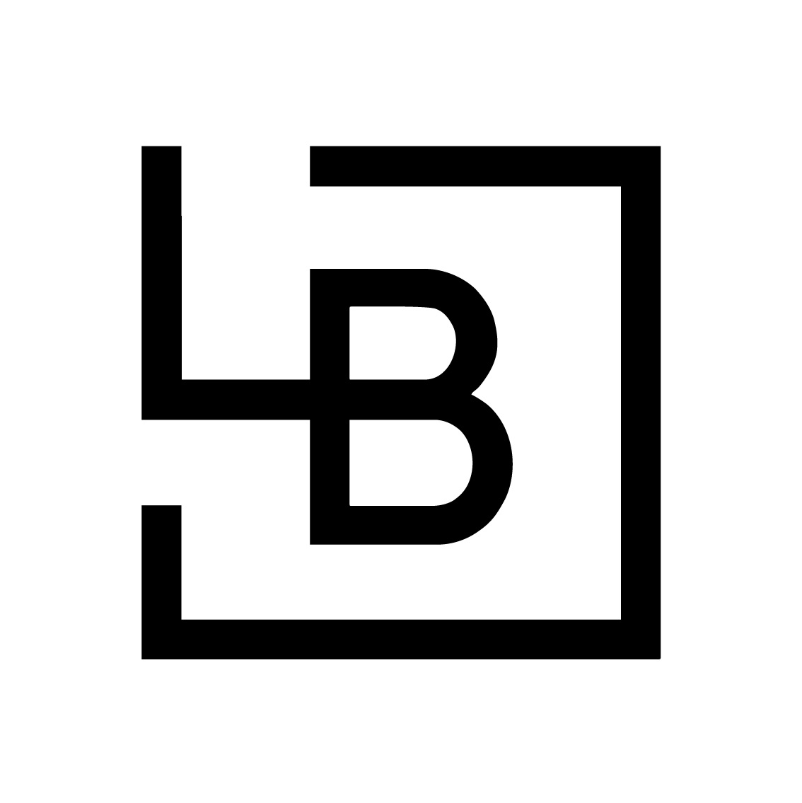
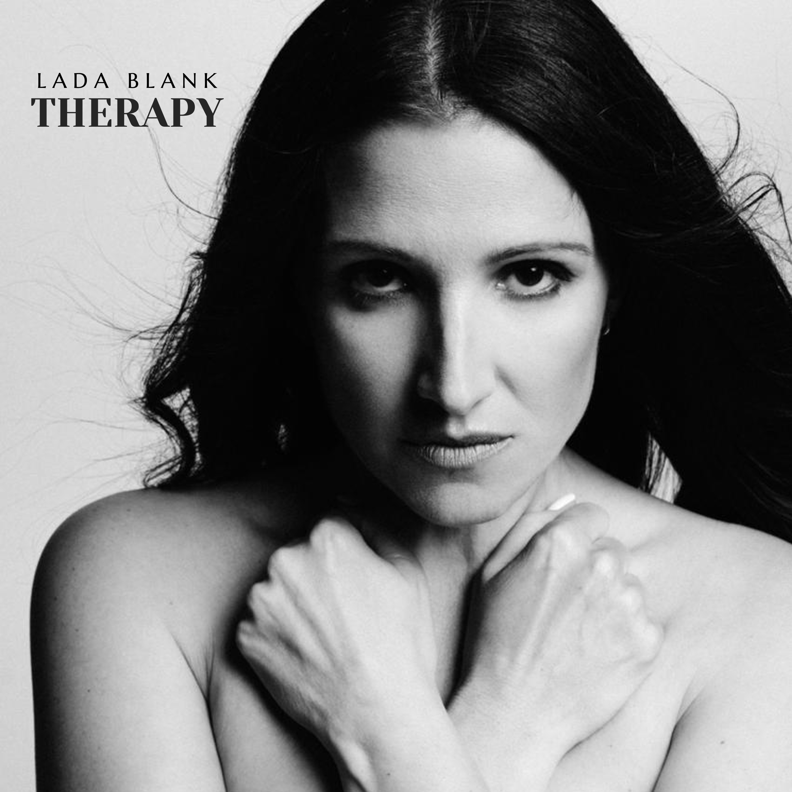

I
Emptiness
Facing the emptiness inside. Not overcoming it, but learning to face and accept it.

LADA BLANKAUTHOR · SONGWRITER · PERFORMER
Through music
to the inner self.
THERAPY · EP · OCTOBER 2026
Enter the world of THERAPYABOUT
Lada Blank creates cinematic musical worlds where each song becomes an emotional space for self-discovery.
Her work explores memory, emotional wounds, identity and the search for inner wholeness — transforming personal stories into a shared human journey.

EP
THERAPY is a five-song cinematic journey — from searching for love, support and salvation outside ourselves toward discovering acceptance, inner freedom, light and love within.
Each song opens an inner room, where memory, pain, grief, fear and hope still live — along with the forgotten parts of our identity.
THERAPY invites us to stop running from ourselves, to face difficult emotions without fear, and — through recognition and awareness — to see that even our deepest wounds can become the beginning of transformation.
Pre-saveFIVE SONGS. FIVE INNER ROOMS.
Not a collection of tracks, but one continuous narrative — a movement through five inner rooms, from searching outside to returning home to oneself.
Facing the emptiness inside. Not overcoming it, but learning to face and accept it.
Looking for power in nature, in something greater than ourselves — and discovering that strength lives within us.
Every loss leaves its scars.
But love returns once we find its source within.
The people closest to us can cause the deepest pain.
Yet we can move beyond the wound and choose love and forgiveness.
We look for support, strength and love outside.
But what remains when nothing and no one can save us?
MUSICAL LANGUAGE
PRE-SAVE
LADA BLANK
ABOUT THE PROJECT
“THERAPY is not about suffering.
It is about understanding and awareness.
Not about trauma — but transformation.”
MUSICAL JOURNEY
THERAPY is a musical journey home — back to yourself.
Love · support · salvation
We look for what we need outside ourselves.
Memory · fear · loss
We enter the rooms we have avoided.
Truth · acceptance
We begin to see what is really happening within us.
Freedom · love · wholeness
Pain becomes a starting point rather than an ending.
Home · self
We discover that the way back was always inward.
The deepest battles happen within us. But that is also where the return begins.
CONTACT / COLLABORATION / PRESS